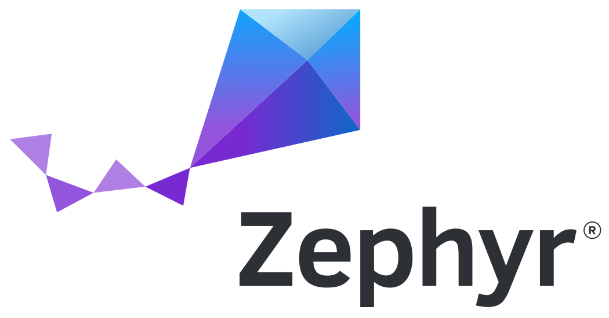
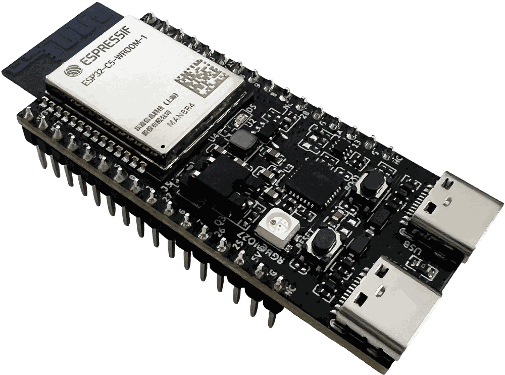

Do primeiro build ao rádio: fluxo de trabalho, devicetree, Kconfig, GPIO, threads, shell, sensores e BLE.
Acompanhe em: https://sylvioalves.github.io/zephyr-workshop-2026/

| 01 | Boas-vindas, o que é Zephyr, workspace west, triagem |
| 02 | Fluxo de trabalho: anatomia da app, pipeline, alvos de placa |
| 03 | Lab 1 - hello_world: compilar, gravar, console |
| 04 | Lab 2 - Devicetree + Kconfig (a hora difícil), e o LED RGB |
| ·· | Intervalo |
| 05 | Lab 3 - Botão + interrupção + log |
| 06 | Lab 4 - Threads + semáforo |
| 07 | Lab 5 - Comando de shell |
| 08 | Lab 6 - Tudo junto numa aplicação só |
| 09 | Twister: garantindo que isso continue funcionando |
| 10 | Levando para o produto: manifesto, módulos e bootloader |
| 11 | Lab 7 - Wi-Fi: do scan até o ping |
| 12 | Lab 8 - BLE: a placa no seu celular |
| 13 | Lab 9 - Atualização OTA pela rede |
| 14 | Próximos passos e encerramento |
slides/index.html.labs/labN-nome/.diff.# todos na mesma versão
git clone https://github.com/sylvioalves/zephyr-workshop-2026
cd zephyr-workshop-2026
O ambiente do Zephyr precisa estar instalado e funcionando antes de começarmos, conforme o guia oficial:
https://docs.zephyrproject.org/latest/develop/getting_started/
/esp32c5/hpcore
Hoje usamos: o botão de boot, o console UART0, o sensor de temperatura do die, o LED RGB e os rádios Wi-Fi e BLE.
Kernel pequeno com threads, escalonador, timers e primitivas de sincronização.
CMake + west + Kconfig + devicetree geram um binário a partir da sua configuração.
Mais de mil placas e milhares de periféricos atrás de uma única API portável.
Módulos, HALs de fabricantes e blobs de RF, tudo orquestrado pelo west.
app_main()main()esp_wifi, nvs_flash, lwIPgpio.h, sensor.h.dts e .overlaysdkconfig.configO mesmo aplicativo roda em muitas placas porque o hardware é descrito em dados, não no código.
Esses dados são o devicetree. É por isso que o mesmo código roda em mais de mil placas - e por que ele não compila quando a placa não descreve o periférico que você pediu.
# ~/zephyrproject/ .venv/ venv com west + dependências de Python .west/ configuração do workspace zephyr/ repositório de manifesto (kernel + samples) modules/ HALs e bibliotecas puxadas pelo manifesto hal_espressif/ ... +40 repositórios
west init escolhe o manifesto; west update baixa os módulos..overlay ou o prj.conf exige build limpa.west build faz, em ordem-p apaga tudozephyr.dts.config + autoconf.hCada fase está aberta em detalhe na referência completa: build-flow.md.
O devicetree gera símbolos DT_HAS_<compat>_ENABLED, e os drivers dependem deles:
config ESP32_TEMP
depends on DT_HAS_ESPRESSIF_ESP32_TEMP_ENABLED
Ligar o nó no devicetree é o que faz o driver existir para o Kconfig.
Tabelas de interrupção e objetos de kernel só podem ser gerados depois de saber os endereços - e gerá-los muda o binário.
zephyr_pre0.elf ← gera isr_tables ↓ zephyr.elf ← imagem final
esp32c5_devkitc/esp32c5/hpcore placa SoC núcleo
west boards | grep esp32c5west build -p -b esp32c5_devkitc/esp32c5/hpcore .
-p força build limpa. Use sempre que mudar placa, overlay ou Kconfig..c.A vitória garantida: toolchain, gravação e console funcionando.
west build -p -b esp32c5_devkitc/esp32c5/hpcore samples/hello_world west flash west espressif monitor
*** Booting Zephyr OS ... ***
Hello World! esp32c5_devkitc/esp32c5
west espressif monitor abre o console já na velocidade certa - não precisa configurar baud.west espressif monitor -p /dev/ttyUSB1A hora difícil - e a mais importante do dia.
west build -p -b esp32c5_devkitc/esp32c5/hpcore \ samples/sensor/die_temp_polling
error: '__device_dts_ord_39' undeclared here
Este é o erro mais comum do Zephyr. Ele quer dizer: você pediu um dispositivo que o build não criou.
/* in the SoC devicetree */ coretemp: coretemp@6000e058 { compatible = "espressif,esp32-temp"; status = "disabled"; <-- aqui };
disabled, nenhum device é criado - e o código não linka.Descreve o hardware: o que existe e como está ligado (pinos, barramentos, endereços).
.dts / .overlay
Seleciona o software: quais subsistemas e drivers compilar.
prj.conf / CONFIG_*
Devicetree diz "o sensor existe". Kconfig diz "compile o driver dele".
/* boards/esp32c5_devkitc_hpcore.overlay */ &coretemp { status = "okay"; };
&coretemp referencia um nó que já existe - só mudamos uma propriedade.west build -p -b esp32c5_devkitc/esp32c5/hpcore \ samples/sensor/die_temp_polling west flash west espressif monitor
CPU Die temperature[coretemp]: 34.2 °C CPU Die temperature[coretemp]: 34.3 °C
Não mudamos uma linha do código do sample. Só descrevemos o hardware.
# prj.conf
CONFIG_SENSOR=y
CONFIG_SENSOR, recompile limpo: quebra (driver não compilado).build/zephyr/zephyr.dts devicetree final, já mesclado build/zephyr/.config Kconfig final, já resolvido
zephyr.dts. Se não está lá, o arquivo não foi lido..config, não no prj.conf.Estes dois arquivos resolvem a maioria das dúvidas de devicetree e Kconfig.
west build -p -b esp32c5_devkitc/esp32c5/hpcore samples/drivers/led/led_strip \ -- -DCONFIG_SAMPLE_LED_UPDATE_DELAY=350 west flash
.dts da placa só declara sw0 e watchdog0.boards/esp32c5_devkitc_hpcore.overlay. Nada para escrever, e compila de primeira - ao contrário do 2a.blinky continua sem compilar: ele quer um led0 de GPIO, e este LED é um led-strip.-D depois do -- sobrepõe um Kconfig do sample na hora do build: o default é 50 ms, e sem isso o LED pisca rápido demais./* build/zephyr/include/generated/zephyr/devicetree_generated.h */ /* the alias is just a nickname for the node path */ #define DT_N_ALIAS_die_temp0 DT_N_S_soc_S_coretemp_6000e058 /* every node gets an ordinal - this is the 39 in the error */ #define DT_N_S_soc_S_coretemp_6000e058_ORD 39
coretemp é o 39.__device_dts_ord_39 é o objeto device desse nó. O nome do símbolo que faltou no link é só o ordinal com um prefixo.O número muda de árvore para árvore. O mecanismo, não.
/* application: samples/sensor/die_temp_polling */ IF_ENABLED(DT_NODE_EXISTS(DT_ALIAS(die_temp0)), (DEVICE_DT_GET(DT_ALIAS(die_temp0)),)) /* driver: drivers/sensor/espressif/esp32_temp */ #define DT_DRV_COMPAT espressif_esp32_temp DT_INST_FOREACH_STATUS_OKAY(ESP32_TEMP_DEFINE);
DT_NODE_EXISTS é verdadeiro mesmo com o nó desabilitado: ele só olha se o nó está na árvore. A aplicação segue e pede o device.DT_INST_FOREACH_STATUS_OKAY só percorre nós okay. Com o nó desligado, o driver nunca cria esse device.A aplicação pede um símbolo que o driver não definiu. É esse o erro do Lab 2a.
dts/riscv/espressif/esp32c5/esp32c5_common.dtsi o SoC uart0: uart@60000000 { rótulo: nome@endereço compatible = "espressif,esp32-uart"; qual driver opera isto reg = <0x60000000 DT_SIZE_K(4)>; onde, e quantos bytes status = "disabled"; o SoC descreve, não liga interrupts = <UART0_INTR_SOURCE ...>; qual IRQ ele levanta interrupt-parent = <&intc>; quem trata essa IRQ clocks = <&clock ESP32_UART0_MODULE>; de qual clock depende }; boards/espressif/esp32c5_devkitc/esp32c5_devkitc_hpcore.dts a placa &uart0 { status = "okay"; }; a placa liga o nó do SoC chosen { zephyr,console = &uart0; }; papel: quem é o console aliases { sw0 = &boot_button; }; apelido: nome fixo → nó
SoC .dtsi → placa .dts → seu .overlay
defconfig da placa → seu prj.conf → confs extra
Você nunca edita o upstream. Você sobrepõe camadas.
west build -t menuconfig # navegar/buscar todos os CONFIG_* west boards # listar alvos de placa
compatible e suas propriedades.dts/bindings/ e samples/ são as melhores referências.Entrada por interrupção, não por polling. E logging de verdade.
Um callback dispara no evento. A CPU não fica presa num laço ocupado esperando o botão.
LOG_INF/WRN/ERR: adiado, com níveis, filtrável por módulo. Prefira à printk crua.
Sem um led0 de GPIO na placa, o console é o nosso dispositivo de saída aqui.
/* sw0 = boot button, already described by the board */ static const struct gpio_dt_spec button = GPIO_DT_SPEC_GET(DT_ALIAS(sw0), gpios); gpio_pin_interrupt_configure_dt(&button, GPIO_INT_EDGE_TO_ACTIVE); gpio_init_callback(&button_cb, button_pressed, BIT(button.pin)); gpio_add_callback(button.port, &button_cb); /* in the callback */ LOG_INF("button pressed (#%u) at %u ms", count, k_uptime_get_32());
O modelo de execução do Zephyr, na prática.
K_THREAD_DEFINE: pilha, entrada, prioridade - as três coisas essenciais.k_msleep(1000) cede a CPU; não é espera ocupada.kernel thread list.O trabalho lento é da thread, não da interrupção.
O callback do botão só dá k_sem_give(). A thread trabalhadora acorda no k_sem_take() e faz o resto. Esse é o padrão ISR-para-thread.
K_SEM_DEFINE(button_sem, 0, 1); static void worker(void *a, void *b, void *c) { while (1) { k_sem_take(&button_sem, K_FOREVER); LOG_INF("worker woke up from the button ISR"); } } K_THREAD_DEFINE(worker_id, 1024, worker, NULL,NULL,NULL, 5,0,0); /* in the button callback: just this */ k_sem_give(&button_sem);
Um comando seu no console. Barato e impressiona.
static int cmd_temp(const struct shell *sh, size_t argc, char **argv) { struct sensor_value val; sensor_sample_fetch(temp_dev); sensor_channel_get(temp_dev, SENSOR_CHAN_DIE_TEMP, &val); shell_print(sh, "die temperature: %d.%02d C", val.val1, val.val2 / 10000); return 0; } SHELL_CMD_REGISTER(temp, NULL, "Read the SoC die temperature", cmd_temp);
temp, help, device list, kernel thread list.Tudo do dia numa aplicação só.
o sensor ligado pelo seu overlay
sensor, shell e log ligados
uma thread amostra a cada segundo
um mutex protege as estatísticas
o botão força uma leitura
temp e temp stats
uart:~$ temp die temperature: 34.85 C uart:~$ temp stats samples: 128 min: 33.90 C max: 36.15 C
uart:~$ log status uart:~$ log disable tempmon cala esse modulo uart:~$ log enable dbg tempmon e agora fala tudo
LOG_MODULE_REGISTER(tempmon, ...) dá um nome ao módulo. É esse nome que o shell filtra.err, wrn, inf, dbg. Em runtime, por módulo.CONFIG_LOG_DEFAULT_LEVEL define o piso do binário.Você acabou de escrever um app de verdade. Como saber amanhã que ele ainda funciona?
Uma aplicação real tem várias configurações (com shell, sem shell, com BLE) e roda em mais de uma placa. Testar tudo à mão não escala.
O runner de testes do próprio Zephyr. Compila e executa N configurações em M plataformas e diz o que quebrou.
sample.yaml ou testcase.yaml, ao lado do código.native_sim ele roda sem placa nenhuma - é isso que torna CI viável.# sample.yaml, ao lado do main.c common: harness: console harness_config: type: multi_line regex: - "heartbeat: up for 0 ms" tests: workshop.lab4.threads: platform_allow: [native_sim]
west twister \ -T labs/lab4-threads \ -p native_sim
1/1 native_sim/native workshop.lab4.threads PASSED (native 3.622s)
harness: console casa a saída com regex. Para testes unitários, use ztest.Sair do sample e virar um repositório seu: manifesto, out-of-tree e módulos.
zephyr/samples/ - ele some no próximo update.mkdir -p ~/meus-projetos/minha-app
# CMakeLists.txt, prj.conf, src/main.c, boards/*.overlay
west build -p -b esp32c5_devkitc/esp32c5/hpcore ~/meus-projetos/minha-app
west update.west.yml e importa o Zephyr como projeto. É o padrão de produto: um clone, uma versão fixada, CI reprodutível.Sair do T1 é a primeira decisão de engenharia depois deste workshop.
west.yml seu# west.yml na raiz do SEU repositorio manifest: projects: - name: zephyr url: https://github.com/zephyrproject-rtos/zephyr revision: main # ou v4.4.2 para fixar import: name-allowlist: # clone only what you use - hal_espressif self: path: minha-app
revision: aceita branch ou tag. main acompanha o upstream; uma tag como v4.4.2 congela, e é o que um produto usa - senão o build de hoje e o de amanhã não são o mesmo build.name-allowlist derruba o clone de ~40 repositórios para os que você usa.west init -m https://github.com/voce/seu-produto ~/ws cd ~/ws && west update
~/ws/ .west/ configuração do workspace minha-app/ o SEU repositório, com o west.yml zephyr/ importado, na revision que você fixou modules/ só os do allowlist
west update recoloca todo mundo na revisão do manifesto. É o comando da reprodutibilidade.# 1. no seu west.yml
projects:
- name: meu_driver
url: https://github.com/voce/meu-driver
revision: v1.2.0
path: modules/meu_driver
# 2. no repo do modulo: # zephyr/module.yml build: cmake: . kconfig: Kconfig settings: board_root: . dts_root: .
zephyr/module.yml é o que transforma um repositório qualquer em módulo Zephyr.settings: com board_root / dts_root / soc_root é como você registra placas e bindings próprios.-DEXTRA_ZEPHYR_MODULES=/caminho/do/moduloAntes do seu main() existir, alguém já decidiu qual imagem carregar.
code-partition = &slot0_partition sempre, mas em simple boot o SoC ignora isso e usa o boot_partition - há um if explícito no CMake do SoC.USE_DT_CODE_PARTITION, e é isso que a linka dentro do slot0.west build -p -b esp32c5_devkitc/esp32c5/hpcore samples/hello_world --sysbuild
Completed 'mcuboot' Completed 'hello_world' build/mcuboot/zephyr/zephyr.bin 35 KB o bootloader build/hello_world/zephyr/zephyr.signed.bin 131 KB a app, assinada
--sysbuild sai um binário e o simple boot assume. Com ele saem dois, e o segundo já vem assinado.CONFIG_: o sysbuild ligou BOOTLOADER_MCUBOOT e USE_DT_CODE_PARTITION na app sozinho.west flash depois - ele grava as duas imagens, cada uma no seu offset.O rádio principal do C5, sem precisar de mais nada.
west build -p -b esp32c5_devkitc/esp32c5/hpcore samples/net/wifi/shell west flash && west espressif monitor
uart:~$ wifi scan quais redes existem uart:~$ wifi connect -s "REDE" -k 1 -p "senha" uart:~$ wifi status conectou? qual o IP? uart:~$ net ping -c 3 1.1.1.1 alcanca a internet?
-k 1 é WPA2-PSK; para rede aberta, use -k 0 e nada de -p.west blobs fetch hal_espressif (feito no pré-work).O dia inteiro a saída foi o console. Agora a placa fala com o seu celular.
west build -p -b esp32c5_devkitc/esp32c5/hpcore labs/lab8-ble west flash && west espressif monitor
<inf> ble_temp: advertising as Espressif-c3d6 Manufacturer data: FF FF 9D 0D company ID 0x0D9D = 3485 -> 34.85 C
ad[].CONFIG_BT_DEVICE_NAME + os 2 últimos bytes do endereço. Ponha o seu no prj.conf: o sufixo separa dois xarás.sys_cpu_to_le16().Trocar o firmware sem tocar na placa - e desfazer se der errado.
img_mgmt recebe a imagem. Transportes: BLE, UART, shell, SPI, UDP e LoRaWAN. Nenhum deles é HTTP._pull. Precisa de um servidor LwM2M.subsys/dfu/img_util escreve no outro slot, subsys/dfu/boot pede a troca e confirma, e http_client baixa.ota_http ser um módulo externo.# west.yml na raiz do SEU repositorio manifest: projects: - name: zephyr url: https://github.com/zephyrproject-rtos/zephyr revision: main # ou v4.4.2 para congelar import: name-allowlist: [hal_espressif, mcuboot, cmsis, mbedtls] - name: zephyr-workshop-2026 url: https://github.com/sylvioalves/zephyr-workshop-2026 revision: main path: modules/zephyr-workshop-2026
west.yml é só um exemplo: é assim que o ota_http entraria num projeto seu. No lab de hoje ele entra por EXTRA_ZEPHYR_MODULES, e nada desta tela precisa rodar.path, e o Zephyr procura zephyr/module.yml na raiz dele.west init -m <seu-repo> e west update.# na maquina do instrutor, uma vez
./scripts/publicar-ota.py build/lab9-ota
imagem : build/lab9-ota/zephyr/zephyr.signed.bin versao : 2.0.0 tamanho: 737452 bytes (720 KB) na placa, digite: ota download http://192.168.0.10:8000/lab9.signed.bin
zephyr.signed.bin do slide do sysbuild, só republicado com nome curto.sudo ufw allow 8000/tcp.uart:~$ ota download http://<servidor>:8000/lab9.signed.bin 100% (737452 / 737452 bytes) uart:~$ ota apply sem "permanent": entra em teste uart:~$ ota reboot sobe a nova uart:~$ ota status UNCONFIRMED uart:~$ ota reboot sem confirmar -> REVERTE
prj.conf: a placa entra na rede sozinha no boot.apply pede a troca.ota apply permanent ou ota confirm, a nova fica.imagem-maxima = (N-1) * setor - trailer. Um setor do slot0 nunca guarda código.swap-using-offset para projeto novo; usamos move por ser o mais rodado em campo.west build compilar west flash gravar west espressif monitor abrir o console west debug GDB + OpenOCD west boards listar alvos west blobs binários de RF west update sincronizar módulos
LOG_LEVEL filtrar por módulo device list dispositivos prontos kernel thread list pilhas e estados zephyr.dts devicetree final .config Kconfig final
-pCONFIG_* no prj.conf/esp32c5/hpcorewest blobs fetch hal_espressif-pharness: console (ztest, cobertura, hardware map)Todo o material fica no repositório - clone, experimente e leve para casa.
https://sylvioalves.github.io/zephyr-workshop-2026/